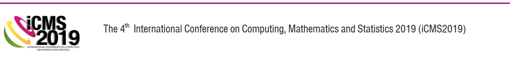
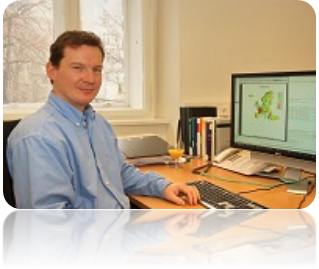

Date:
23 - 24 April 2019
Venue:
Ombak Villa Resort, Langkawi Island, Malaysia
“Visualization of your tidy data”
21 - 22 April 2019
Ombak Villa Resort, Langkawi
In conjunction with the two conferences, the organising committee is conducting three parallel pre-conference workshops. For registration and further information please refer to the respective link given below.
| Matthias Templ, PhD | |
|---|---|
|  | Dr Matthias Templ is the owner of data analysis company OG. He obtained his PhD in Technical Mathematics from Vienna University of Technology and was an associate professor at the same university. Currently Dr Temple lectures at the Institute of Data Analysis and Process Design, Zurich University of Applied Sciences, Switzerland. He also holds a position as a consultant to the Palacký University Olomouc, Czech Republic. Dr Templ is a researcher at the Quality and Methods Unit at Statistics Austria. His other consultation works include for the World Bank and the OECD. His main research interest is in the area of imputation, statistical disclosure control, visualization, compositional data analysis, computational statistics, teaching in statistics and cluster analysis. He participated in many European research projects, to name one of those: the AMELI project for adequate estimation of poverty and social exclusion. Dr Templ has more than 280 scientific contributions in books, scientific journals and conferences as well as more than 40 papers in well-known indexed scientific journals. He is the author and maintainer of several R packages for official statistics, such as the sdcMicro package for statistical disclosure control, the VIM package for visualization and imputation of missing values, the simPop package for synthetic population simulation, and the robCompositions package for robust analysis of compositional data. He is also a co-author to many other packages. In addition, Dr. Matthias Templ is the editor-in-chief of the Austrian Journal of Statistics; associate editor for Springer’s Journal Wirtschafts-und Sozialstatistische Archiv; editor for the journal The Register; and on the editorial board of three other journals – JWARP journal, The Journal Transactions on Data Privacy, and the Journal Frontiers in Biomedical Physics |
open source; powerful and comprehensive platform for visualizing data, understanding and evaluating statistical models; programming language and software environment for statistical computing and graphics; ready to use for applications in data science, data analytics and for big data sets; participants expected to be able to use efficient R code and use R packages to perform data analytics after the workshop
Lecturers, Researchers, Engineers, Students, Industry Professionals and Scientists of any discipline who wish to explore R and Big Data.
We assume basic knowledge in R syntax, for example by doing the exercises of R package Swirl or a free course, e.g. on data camp in advance to this course. All topics are accompanied by practical exercises to be done by course participants themselves on their laptops.
First day:
RStudio
Data Analysis with R, some basics and warm up
Tidy data and data manipulation with dplyr
The graphics package in R
Second day:
Advanced data visualization with ggplot2
Mapping, Maps with ggmap and leaflet
Special graphics for special problems
Overview on interactive visualisation tools
Web applications with R shiny and markdown
| SC Members | Institution |
|---|---|
| Tudorel Andrei | National Institute of Statistics and Bucharest, University of Economic Studies, Bucharest, Romania |
| Matthias Templ | Statistics Austria and Institute of Data Analysis and Process Design, Zurich University of Applied Sciences, Zurich Switzerland |
| Ralf Munnich | University of Trier, Germany |
| Risto Lehtonen | University of Helsinki, Finland |
| Gergely Daroczi | Easystats Ltd, Budapest, Hungary |
| Lucian Liviu Albu | Romanian Academy, Institute for Economic Forecasting, Bucharest, Romania |
| Gheorghe Zaman | Romanian Academy, Institute of National Economy, Bucharest, Romania |
| Valentina Vasile | Romanian Academy, Institute of National Economy, Bucharest, Romania |
| Dorin Jula | Romanian Academy, Institute for Economic Forecasting and Ecological University of Bucharest, Romania |
| Bogdan Oancea | University of Bucharest and National Institute of Statistics, Bucharest, Romania |
| Monica Roman | Bucharest University of Economic Studies, Romania |
| Nicoleta Caragea | National Institute of Statistics and Ecological University of Bucharest, Romania |
| Antoniade-Ciprian Alexandru | Ecological University of Bucharest, Romania |
| Adrian Dusa | University of Bucharest, Romania |
| Elena Druica | University of Bucharest, Romania |
| Nicolae-Marius Jula | Nicolae Titulescu University, Bucharest, Romania |
| Ana Maria Dobre | National Institute of Statistics |
| Gerald Cheang | University of South Australia, Australia |
| Suhaidi Hassan | InterNetWorks Research Laboratory, Universiti Utara Malaysia, Malaysia |
| Martin Everett | University of Manchester, UK |
| Nicolaas Jan Dirk Nagelkerke | University of Amsterdam, Netherland |
| Ang Miin Huey | Uiniversiti Sains Malaysia, Malaysia |
| Poo Kuan Hoong | Senior Manager Data Science, AC Nielsen |
| Nurhuda Ismail | Universiti Teknologi MARA, Malaysia |
Abd Razak Ahmad
Amirah Hazwani Abd Rahim
Anis Mardiana Ahmad
Asmahani Nayan Fazillah Bosli
Kamarul Ariffin Mansor
Kartini Kassim
Mohd Rijal Illias
Kor Liew Kee
Noor Hafizah Zainal Aznam
Rosidah Ahmad
Shahida Farhan Zakaria
Siti Fairus Mokhtar
Wan Siti Esah Che Hussain
For further enquiries,
E-mail:
icms2019@uitm.edu.my
Phone:
+604-456 2506 (Kor Liew Kee) (Publication)
+604-456 2406 (Asmahani Nayan) (General Inquiry)
+604-456 2445 (Noor Hafizah Zainal Aznam) (Payment)
+604-456 2408 (Kamarul Ariffin Mansor) (Workshop)
Address:
Secretariat iCMS2019
Faculty of Computer and Mathematical Sciences
Universiti Teknologi MARA Kedah
Sungai Petani Campus
08400 Merbok
Kedah Darul Aman, MALAYSIA
All information submitted for the purpose of registration to the conference and fee payment will be treated with strict confidential.
UiTM and the organizing committee shall not be able to accept refund requests.
UiTM and the organizing committee shall not be responsible for information provided in this site on accommodation and tourism in Langkawi Malaysia. Kindly please check linked sites for regular updates.
All responsibilities on flights and accommodation bookings lie with the delegates.